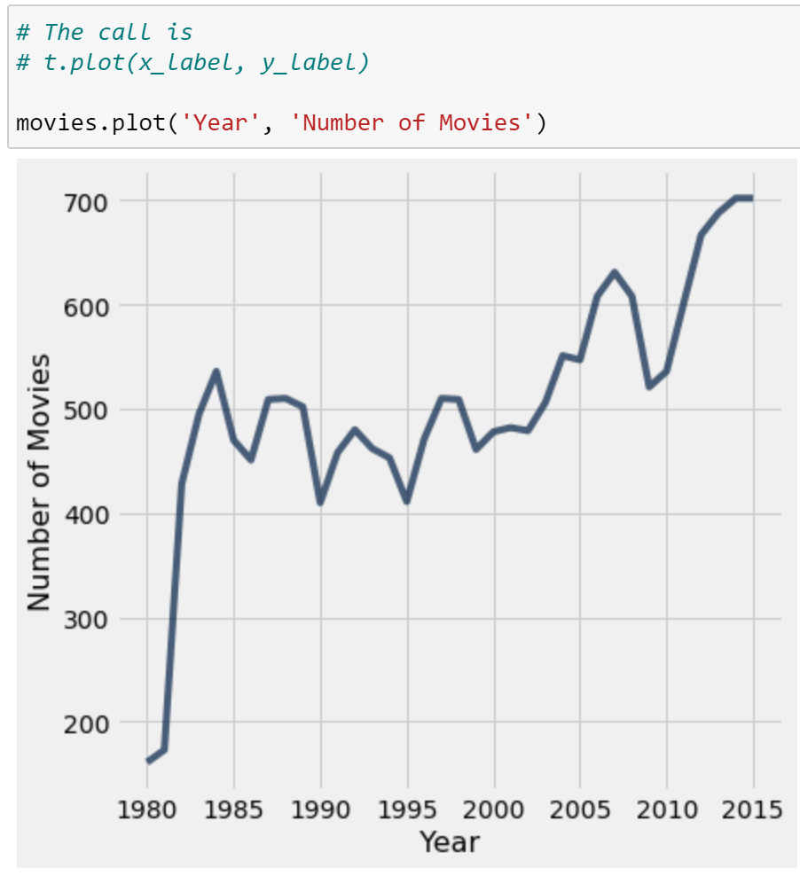
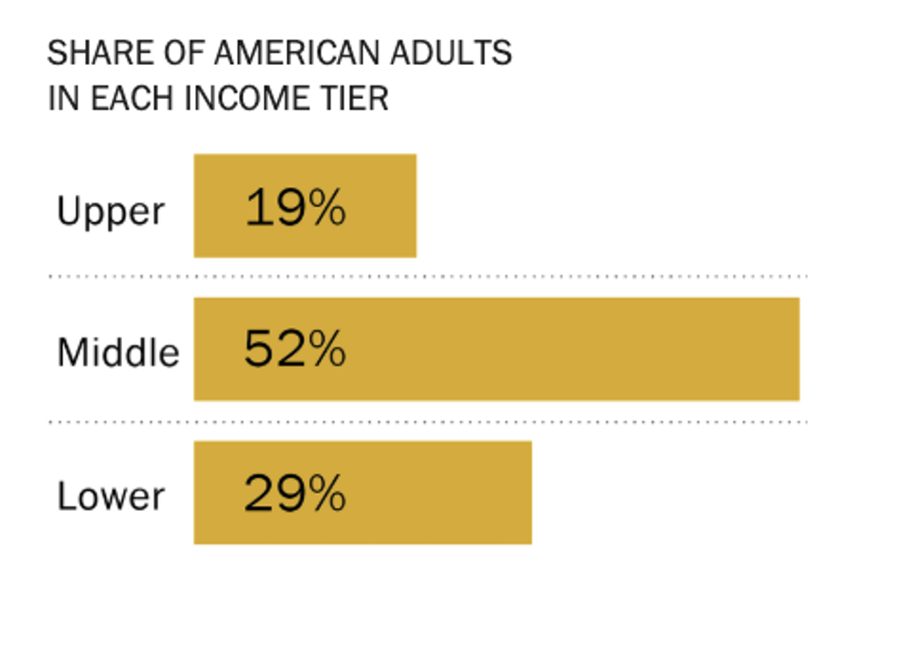
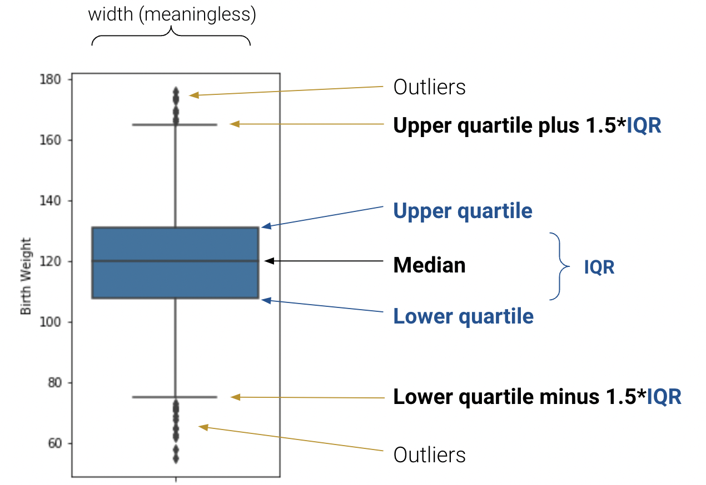

Code
import pandas as pd
births = pd.read_csv("data/baby.csv")
births.head(5)In our journey of the data science lifecycle, we have begun to explore the vast world of exploratory data analysis. More recently, we learned how to pre-process data using various data manipulation techniques. As we work towards understanding our data, there is one key component missing in our arsenal - the ability to visualize and discern relationships in existing data.
These next two lectures will introduce you to various examples of data visualizations and their underlying theory. In doing so, we’ll motivate their importace in real-world examples with the use of plotting libraries.
You’ve likely encountered several forms of data visualizations in your studies. You may remember two such examples from Data 8: line charts and histograms. Each of these served a unique purpose. For example, line charts displayed how numerical quantities changed over time, while histograms were useful in understanding a variable’s distribution.
Line Chart

Histogram

Visualizations are useful for a number of reasons. In Data 100, we consider two areas in particular:
One of the most common applications of visualizations - and the one that will be covered today - is in understanding a distribution of data.
A distribution describes the frequency of unique values in a variable. Distributions must satisfy two properties:
Let’s look at a couple of examples.
Not a Valid Distribution

Valid Distribution

Left Diagram: This is not a valid distribution. Individuals can belong to more than one category and the total frequency of all categories does not sum up to 100%.
Right Diagram: This example satisfies the two properties of distributions, so it is a valid distribution.
As we saw above, bar plots are one of the most common ways of displaying the distribution of a qualitative (categorical) variable. The length of a bar plot encodes the frequency of a category; the width encodes no useful information.
Let’s contextualize this in an example. We will use the familiar births dataset from Data 8 in our analysis.
import pandas as pd
births = pd.read_csv("data/baby.csv")
births.head(5)We can visualize the distribution of the Maternal Smoker column using a bar plot. There are a few ways to do this.
births['Maternal Smoker'].value_counts().plot(kind = 'bar');Recall that .value_counts() returns a Series with the total count of each unique value. We call .plot(kind = 'bar') on this result to visualize these counts as a bar plot.
Plotting methods in pandas are the least preferred and not supported in Data 100, as their functionality is limited. Instead, future examples will focus on other libaries built specifically for visualizing data. The most well-known library here is matplotlib.
import matplotlib.pyplot as plt
ms = births['Maternal Smoker'].value_counts()
plt.bar(ms.index, ms)
plt.xlabel("Maternal Smoker")
plt.ylabel("Count");While more code is required to achieve the same result, matplotlib is often used over pandas for its ability to plot more complex visualizations, some of which are discussed shortly.
However, notice how the x-axis is a range of integers rather than the two categories, True and False. This is because matplotlib coerces True to a value of 1 and False to 0. Also, note how we needed to label the axes with plt.xlabel and plt.ylabel - matplotlib does not support automatic axis labeling. To get around these inconveniences, we can use a more effecient plotting library, seaborn.
import seaborn as sns
sns.countplot(data = births, x = "Maternal Smoker");seaborn.countplot both counts and visualizes the number of unique values in a given column. This column is specified by the x argument to sns.countplot, while the DataFrame is specified by the data argument.
For the vast majority of visualizations, seaborn is far more concise and aesthetically pleasing than matplotlib. However, the color scheme of this particular bar plot is abritrary - it encodes no additional information about the categories themselves. This is not always true; color may signify meaningful detail in other visualizations. We’ll explore this more in-depth during the next lecture.

plotly is one of the most versatile plottling libraries and widely used in industry. However, plotly has various dependencies that make it difficult to support in Data 100. Therfore, we have intentionally excluded the code to generate the plot above.
By now, you’ll have noticed that each of these plotting libraries have a very different syntax. As with pandas, we’ll teach you the important methods in matplotlib and seaborn, but you’ll learn more through documentation.
Histograms are a natural extension to bar plots; they visualize the distribution of quantitative (numerical) data.
Revisiting our example with the births DataFrame, let’s plot the distribution of the Maternal Pregnancy Weight column.
births.head(5)How should we define our categories for this variable? In the previous example, these were the unique values of the Maternal Smoker column: True and False. If we use similar logic here, our categories are the different numerical weights contained in the Maternal Pregnancy Weight column.
Under this assumption, let’s plot this distribution using the seaborn.countplot function.
sns.countplot(data = births, x = 'Maternal Pregnancy Weight');This histogram clearly suffers from overplotting. This is somewhat expected for Maternal Pregnancy Weight - it is a quantitative variable that takes on a wide range of values.
To combat this problem, statisticians use bins to categorize numerical data. Luckily, seaborn provides a helpful plotting function that automatically bins our data.
sns.histplot(data = births, x = "Maternal Pregnancy Weight");This diagram is known as a histogram. While it looks more reasonable, notice how we lose fine-grain information on the distribution of data contained within each bin. We can introduce rug plots to minimize this information loss. An overlaid “rug plot” displays the within-bin distribution of our data, as denoted by the thickness of the colored line on the x-axis.
sns.histplot(data = births, x = "Maternal Pregnancy Weight");
sns.rugplot(data = births, x = "Maternal Pregnancy Weight", color = 'red');You may have seen histograms drawn differently - perhaps with an overlaid density curve and normalized y-axis. We can display both with a few tweaks to our code.
To visualize a density curve, we can set the the kde = True argument of the sns.histplot. Setting the argument stat = "density" normalizes our histogram and displays densities, instead of counts, on the y-axis. You’ll notice that the area under the density curve is 1.
sns.histplot(data = births, x = "Maternal Pregnancy Weight", kde = True,
stat = "density")
sns.rugplot(data = births, x = "Maternal Pregnancy Weight", color = 'red');Histograms allow us to assess a distribution by their shape. There are a few properties of histograms we can analyze:
If a distribution has a long right tail (such as Maternal Pregancy Weight), it is skewed right. In a right-skewed distribution, the few large outliers “pull” the mean to the right of the median.
If a distribution has a long left tail, it is skewed left. In a left-skewed distribution, the few small outliers “pull” the mean to the left of the median.
In the case where a distribution has equal-sized right and left tails, it is symmetric. The mean is approximately equal to the median.
Loosely speaking, an outlier is defined as a data point that lies an abnormally large distance away from other values. We’ll define the statistical measure for this shortly.
Outliers disproportionately influce the mean because their magnitude is directly involved in computing the average. However, the median is largely unaffected - the magnitude of an outlier is irrelevant; we only care that it is some non-zero distance away from the midpoint of the data.
A mode of a distribution is a local or global maximum. A distribution with a single clear maximum is unimodal, distributions with two modes are bimodal, and those with 3 or more are multimodal.
For example, the distribution of birth weights for maternal smokers is (weakly) multimodal.
births_maternal_smoker = births[births['Maternal Smoker'] == True]
sns.histplot(data = births_maternal_smoker, x= 'Birth Weight');On the other hand, the distribution of birth weights for maternal non-smokers is unimodal.
births_maternal_smoker = births[births['Maternal Smoker'] == False]
sns.histplot(data = births_maternal_smoker, x= 'Birth Weight');Boxplots are an alternative to histograms that visualize numerical distributions. They are especially useful in graphicaly summarizing several characteristics of a distribution. These include:
The lower quartile, median, and uper quartile are the \(25\)th, \(50\)th, and \(75\)th percentiles of data, respectively. The interquartile range measures the spread of the middle \(50\)% of the distribution, calculated as the (\(3\)rd Quartile \(-\) \(1\)st Quartile).
The whiskers of a box-plot are the two points that lie at the \(1\)st Quartile \(-\) (\(1.5\) * IQR), and the \(3\)rd Quartile \(+\) (\(1.5\) * IQR). They are the lower and upper ranges of “normal” data (the points excluding outliers). Subsequently, the outliers are the data points that fall beyond the whiskers, or further than (\(1.5\) \(*\) IQR) from the extreme quartiles.
Let’s visualize a box-plot of the Birth Weight column.
import numpy as np
sns.boxplot(data = births, y = "Birth Weight");
bweights = births['Birth Weight']
q1 = np.percentile(bweights, 25)
q2 = np.percentile(bweights, 50)
q3 = np.percentile(bweights, 75)
iqr = q3 - q1
whisk1 = q1 - (1.5 * iqr)
whisk2 = q3 + (1.5 * iqr)
print("The first quartile is {}".format(q1))
print("The second quartile is {}".format(q2))
print("The third quartile is {}".format(q3))
print("The interquartile range is {}".format(iqr))
print("The whiskers are {} and {}".format(whisk1, whisk2))Here is a helpful visual that summarizes our discussion above.

Another diagram that is useful in visualizing a variable’s distribution is the violin plot. A violin plot supplements a box-plot with a smoothed density curve on either side of the plot. These density curves highlight the relative frequency of variable’s possible values. If you look closely, you’ll be able to discern the quartiles, whiskers, and other hallmark features of the box-plot.
sns.violinplot(data = births, y = 'Birth Weight');Earlier in our discussion of the mode, we visualized two histograms that described the distribution of birth weights for maternal smokers and non-smokers. However, comparing these histograms was difficult because they were displayed on seperate plots. Can we overlay the two to tell a more compelling story?
In seaborn, multiple calls to a plotting library in the same code cell will overlay the plots. For example:
births_maternal_smoker = births[births['Maternal Smoker'] == False]
births_non_maternal_smoker = births[births['Maternal Smoker'] == True]
sns.histplot(data = births_maternal_smoker, x= 'Birth Weight',
color = 'orange', label = 'smoker')
sns.histplot(data = births_non_maternal_smoker, x= 'Birth Weight',
color = 'blue', label = 'nonsmoker')
plt.legend();However, notice how this diagram suffers from overplotting. We can fix this with a call to sns.kdeplot. This will remove the bins and overlay the histogram with a density curve that better summarizes the distribution.
sns.kdeplot(data = births_maternal_smoker, x= 'Birth Weight', color = 'orange', label = 'smoker')
sns.kdeplot(data = births_non_maternal_smoker, x= 'Birth Weight', color = 'blue', label = 'nonsmoker')
plt.legend();Unfortunately, we lose critical information in our distribution by removing small details. Therefore, we typically prefer to use box-plots and violin plots when comparing distributions. These are more concise and allow us to compare summary statistics across many distributions.
sns.violinplot(data=births, x='Maternal Smoker', y='Birth Weight');
# The following line of code plots a box-plot
#sns.boxplot(data=births, x='Maternal Smoker', y='Birth Weight');Up until now, we’ve discussed how to visualize single-variable distributions. Going beyond this, we want to understand the relationship between pairs of numerical variables.
Scatter plots are one of the most useful tools in representing the relationship between two quantitative variables. They are particularly important in gauging the strength, or correlation between variables. Knowledge of these relationships can then motivate decisions in our modeling process.
For example, let’s plot a scatter plot comparing the Maternal Pregnancy Weight and Birth Weight colums, using both matplotlib and seaborn.
# Matplotlib Example
plt.scatter(births['Maternal Pregnancy Weight'], births['Birth Weight'])
# For brevity, we have excluded code to label the axes# Seaborn Example
sns.scatterplot(data = births, x = "Maternal Pregnancy Weight", y = "Birth Weight",
hue = "Maternal Smoker")This is an example where color is used to add a third dimension to our plot. This is possible with the hue paramater in seaborn, which adds a categorical column encoding to an existing visualization. This way, we can look for relationships in Maternal Pregnancy Weight and Birth Weight in both maternal smokers and non-smokers. If we wish to see the relationship’s strength more clearly, we can use sns.lmplot.
sns.lmplot(data = births, x = "Maternal Pregnancy Weight", y = "Birth Weight",
hue="Maternal Smoker", ci=False);We can make out a weak, positive relationship in pregnancy weight and birth weight for both maternal smokers and non-smokers (slightly more positive in maternal smokers).
Unfortunately, our scatter plots above suffered from overplotting, which made them hard to interpret. And with a large number of points, jittering is unlikely to resolve the issue. Instead, we can look to hex plots and contour plots.
Hex Plots can be thought of as a two dimensional histogram that shows the joint distribution between two variables. This is particularly useful working with very dense data.
sns.jointplot(data = births, x = "Maternal Pregnancy Weight",
y = "Birth Weight", kind = 'hex')The axes are evidently binned into hexagons, which makes the linear relationship easier to decipher. Darker regions generally indicate a higher density of points.
On the other hand, contour plots are two dimensional versions of density curves with marginal distributions of each variable on the axes. We’ve used very similar code here to generate our contour plots, with the addition of the kind = 'kde' and fill = True arguments.
sns.jointplot(data = births, x = "Maternal Pregnancy Weight",
y = "Birth Weight", kind = 'kde', fill = True)